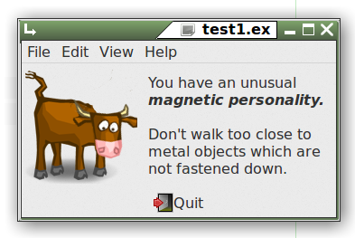
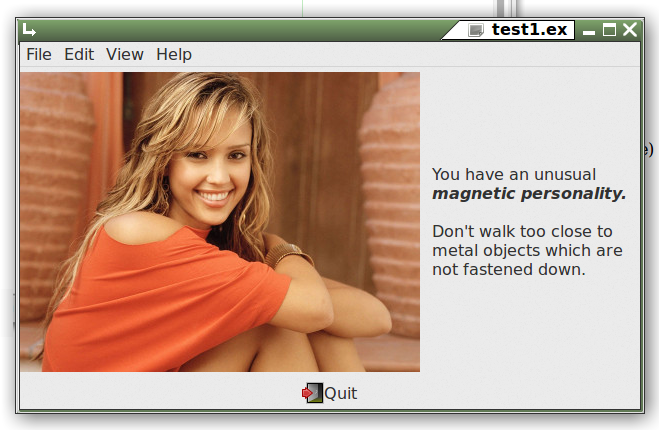

Use Glade to select the File->Open menu item, which will be named imagemenuitem2, unless you've changed it.
(Note that you are free to change the name of any item by typing a new name
into the ID: entry on the General tab for that item.)
Let's do so, and change imagemenuitem2 to a more meaningful name: file_open (as usual, no quotes).
Now select the Signals tab, and set the activate handler to be open_file. This will be the name of your Euphoria function which will, surprise, surprise! - open a file!
Click the Save the Current Project toolbutton, and run your program again. In your terminal you should see something resembling:
------------------------------------------------- -- Undeclared function in test1.glade ------------------------------------------------- ------------------------------ global function open_file() ------------------------------ return 1 end function
Copy the function template from the terminal, paste it into your Eu program, and fill in the blank space with some working code, as shown in the code sample below.
Since you will be using EuGTK's handy pre-built fileselector, you'll also have to add include GtkFileSelector.e to the top of your program.
include GtkEngine.e
include GtkFileSelector.e -- add this
add(builder,"~/demos/examples/glade/test1.glade")
main()
---------------------------
global function help_me()
---------------------------
return Info(,,"About","My fine program!")
end function
----------------------------
global function open_file()
----------------------------
object fname = fileselector:Open("*.ex") -- use the handy pre-build selector
if sequence(fname) then
Info(,,"You Selected",fname)
end if
return 1
end function
Click on a file, and you should see the filename displayed in a neat pop-up box.
If you recall, the original Box we added as the first item in our window had 3 'divisions', oriented vertically. We filled the first (top) with a menu, and the 3rd (bottom) with a button. The middle one was left empty, and so it doesn't show at all.
Let's add some things to the middle. We can't put more than one item in there; try it, you'll see.
We'll need a container if we want more than one thing there, so choose another Box , drop it into the empty middle space, change number of items to 2, and click create. The default orientation is vertical, which won't do for this particular demo, so change it to horizontal.
Into the left-hand panel of the Box we just added, drop an image container. It's the little house with the yellow roof in the Control and Display section of the left-hand toolbar.
In the right-hand panel, drop a label container. It's also in the Control and Display section. Under Appearance/Label: type in some text. Use markup if you like, and click the Use Markup checkbox. Save your work - you should do this frequently.
What about the image? We'll need to pick one, so click on the little missing image icon on your program's window, and choose one of the following:
Run the program again, and note that no changes or additions or adjustments were required to the 12 lines of Euphoria source code.
Suppose we want an image more pleasing than the one above? Just change the open_file function a bit:
-----------------------------
global function open_file()
-----------------------------
fileselector:filters = {"image"}
object newfile = fileselector:Open("*")
if sequence(newfile) then
set("image1","from file",newfile)
end if
return 1
end function
Just click on the image you prefer. I like this one!
Building more complex objects such as TreeViews, ListViews, etc. with Glade will involve some experimenting. Explaining these in detail (using words) would require a whole book, which, like most such books, would cost $99.00 plus tax, and would bore you half to death.
So, if you really feel that you can't handle it on your own from here, start saving your $99.00 (plus tax) for the book.
But frankly, Glade doesn't save any time when creating these objects, since the process is very tedious. You can achieve the same outcome much more easily by writing just a few lines of code with an ordinary text editor, cutting and pasting from the demo programs where applicable.
Try it - this isn't rocket surgery!